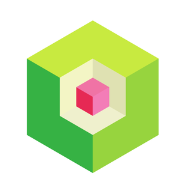
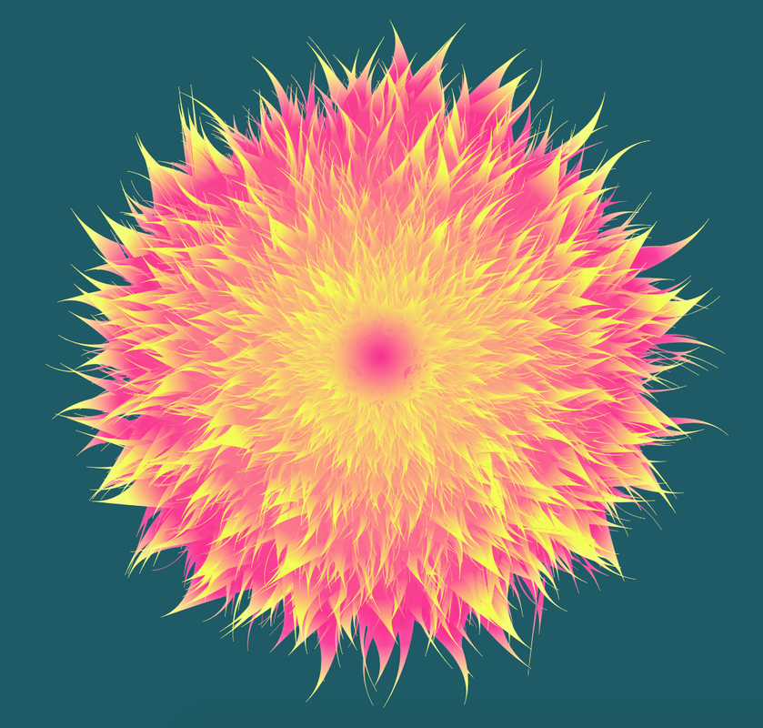
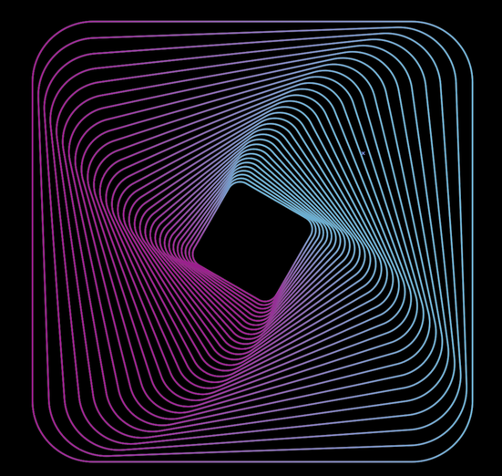
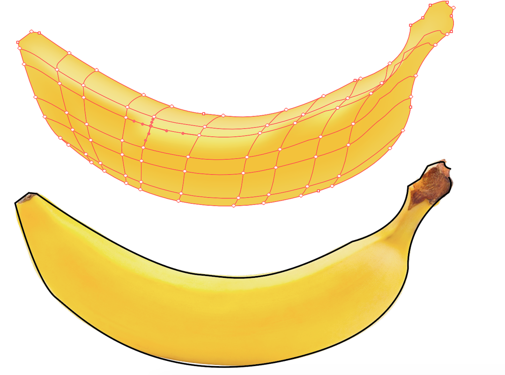
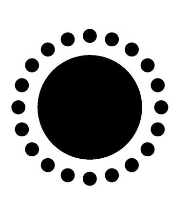

AI Tips
26/11/2019
Isometric logo
- 1 - draw three 6 side polygons
- 2 - different size
- 3 - align vert., horizontally, color in shades of gray (center light gray)
- 4 - make lines with pen tool
- 5 - pathfinder → split
- 6 - drag from swatches to artwork

Blend Flower
- 1 - make two stars
- 2 - create gradient align them
- 3 - make 100 step blend with Blend tool
- 4 - pucker and bloat -23
- 5 - effect roughen 36% relative
- 6 - details 0
- 7 - smooth points

Transform
- Select shape -> effect - dissort and transform -> transform
- Scale: horizontal 95%, vertical 95%
- Angle: 2°
- copies: 30
- make sure "Transform objects is ticked"

Gradient Mesh
- 1 - import banana image and create outline with pen tool
- 2 - with eyedropper fill shape with banan color
- 3 - with mesh tool click the banana
- 4 - with direct selection tool select parts of the mesh and fill them with different color

Repeat shape along circle path
- 1 - create 2 circles one small
- 2 - select both, center vertically
- 3 - click rotate
- 4 - alt + click circle centre
- 5 - enter how many degrees
- 6 - press cmd + d repeatedly to copy shape along the path

Transformations
- 1 - View -> fit artboards in window
- 2 - new artboard by artboard tool or from the artboards panel
Live painting
- 1 - Create rectangle and draw line accros
- 2 - Select all and click Object -> Live painitng -> create
- 3 - Live paint bucket tool - color only demanded areas
Blend with steps
- 1 - create one small circle left and one bigger on the right
- 2 - double click the tool, set specified steps to 12 -> click on the first circle and then on the second
Width tool
- 1 - create cirle
- 2 - with scissors tool cut part of it
- 3 - use width tool to change profile of the line